Sasaguri
Sasaguri · Fukuoka
Sasaguri
Highlighted on the Fukuoka map.
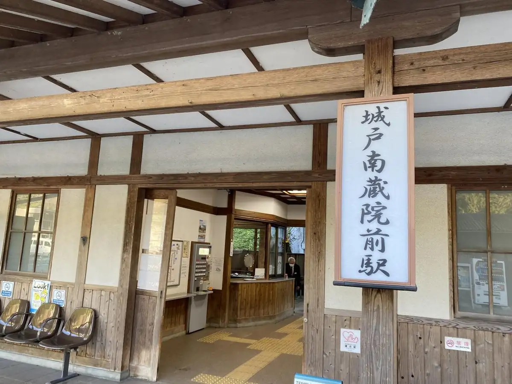
Dining
篠栗珈琲焙煎所
篠栗珈琲焙煎所
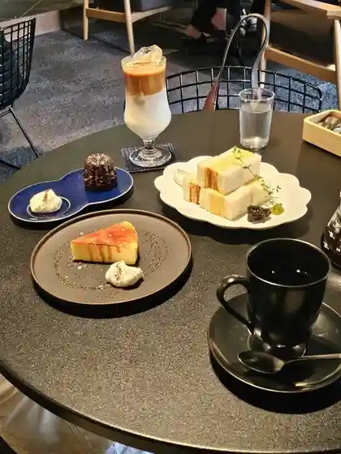
茶房 わらび野
茶房 わらび野
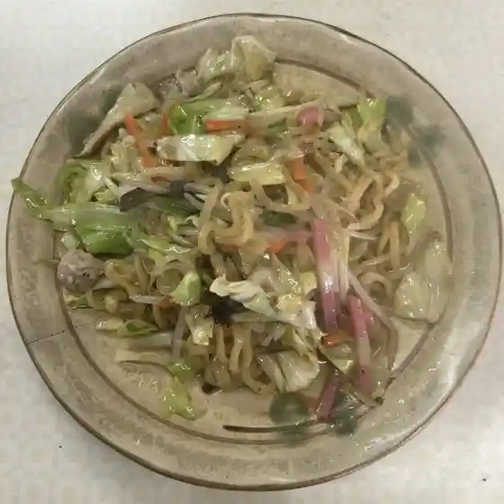
篠栗うどん
篠栗うどん
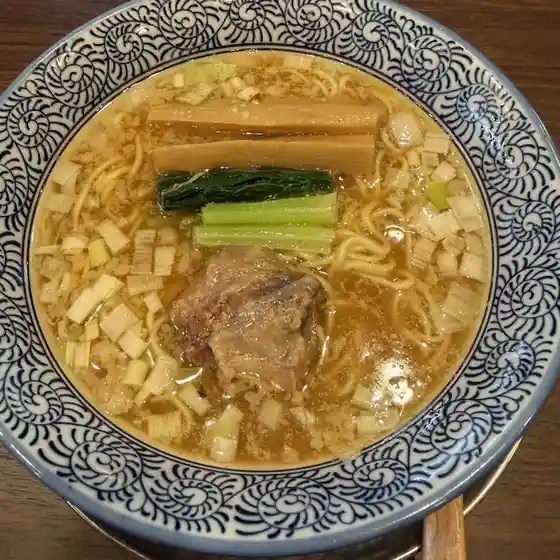
中華そば タンポポ
中華そば タンポポ
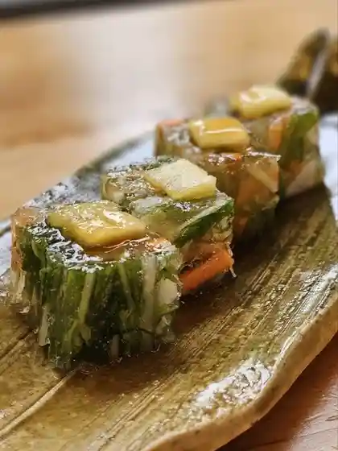
スリランカ カレーレストラン ひすず
スリランカ カレーレストラン ひすず
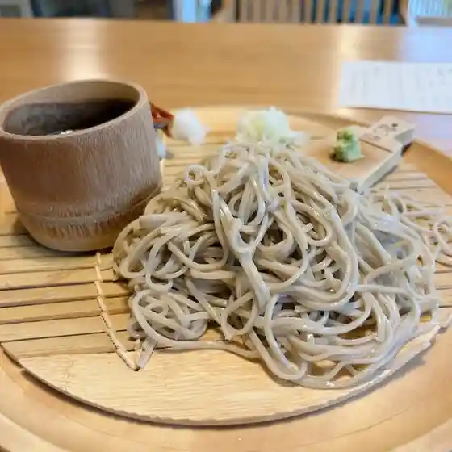
蕎麦 文治郎
蕎麦 文治郎
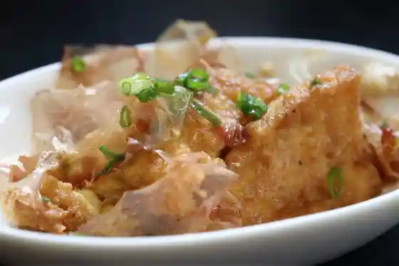
地蔵とうふ 篠栗店
地蔵とうふ 篠栗店
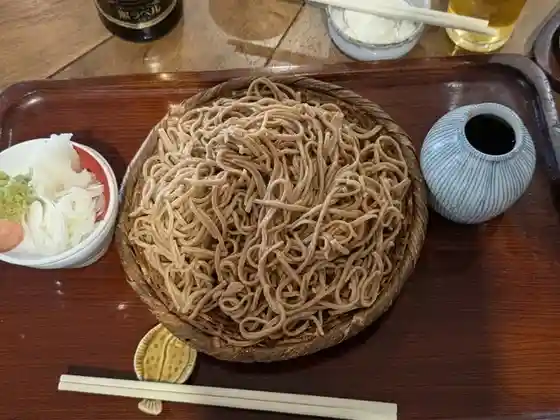
蕎麦切 桜花
蕎麦切 桜花
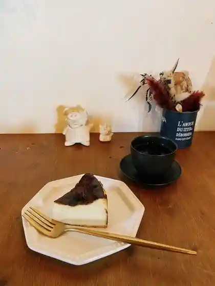
bubude coffee
bubude coffee
バーガー トウカ
バーガー トウカ
ひみつキッチン ナカニシ
ひみつキッチン ナカニシ
ステーキハウス WINNERs 篠栗店
WINNERs
あげもんのさかえや
あげもんのさかえや
桃花苑
桃花苑
リヤク
リヤク
パンサク
パンサク
欧風食堂 オッタントット
欧風食堂 オッタントット
Yamaya Factory Terrace
Yamaya Factory Terrace
菓子工房 菓楽
菓子工房 菓楽
山王うどん
山王うどん
夢や
夢や
JAVA COFFEE YARD
JAVA COFFEE YARD
喫茶 陶花
喫茶 陶花
肉最強伝説 篠栗店
肉最強伝説 篠栗店
俺野塩
俺野塩
339Re
339Re
自家製酵母パン なないろ
自家製酵母パン なないろ
だいあん
だいあん
よしみ
よしみ
うどんの小麦冶 八木山バイパス店
うどんの小麦冶 八木山バイパス店
筑豊ラーメン山小屋 篠栗店
筑豊ラーメン山小屋 篠栗店
吉田屋
吉田屋
荒神茶屋
荒神茶屋
港屋
港屋
居酒屋 とり玄
居酒屋 とり玄
資さんうどん アクロスプラザ篠栗店
資さんうどん アクロスプラザ篠栗店
村嶋饅頭店
村嶋饅頭店
広島屋
広島屋
たまや
たまや
ガウレ
ガウレ
Petit Chambre
Petit Chambre
HOTEL AZ 福岡篠栗店
HOTEL AZ
海のまんま・海鮮味楽
海のまんま・海鮮味楽
若杉の湯
若杉の湯
明石寺 大日屋旅館
明石寺 大日屋旅館
ウエスト 篠栗店
ウエスト 篠栗店
直ちゃん市場
直ちゃん市場
MiG by Jill
MiG by Jill
萩や
萩や
福岡篠栗食堂
福岡篠栗食堂
バイキングレストラン志高 福岡篠栗店
バイキングレストラン志高 福岡篠栗店
とり焼肉 悠和
とり焼肉 悠和
アイアイささぐり
アイアイささぐり
真心ダイニング 厨～りっぷ
真心ダイニング 厨~りっぷ
本場インドカレースミ 篠栗店
本場インドカレースミ 篠栗店
STEEL&FABRIC
STEEL&FABRIC
桝屋旅館
桝屋旅館
たい焼きKATO
KATO
バー ソノラ
バー ソノラ
吉野家 201号線篠栗店
吉野家 201号線篠栗店
ジョイフル 篠栗店
ジョイフル 篠栗店
地鶏食堂 篠栗店
地鶏食堂 篠栗店
お肉の直売所 野田ミート 篠栗店
お肉の直売所 野田ミート 篠栗店
寿し豊
寿し豊
南蔵院 駅売店
南蔵院 駅売店
元祖スタミナ焼きそばーば
元祖スタミナ焼きそばーば
Cafe ベイベリー
Cafe
煙巻ん
煙巻ん
山王屋
山王屋
純一 篠栗店
純一 篠栗店
OHANA
OHANA
チートデイ
チートデイ
ユーキの手作り弁当
ユーキの手作り弁当
お寺喫茶 楓
お寺喫茶 楓
おむすび屋かぶき
おむすび屋かぶき
TRIAL GO 篠栗尾仲店
TRIAL GO
お休み処 ひらわ
お休み処 ひらわ
トリノタタキヤ
トリノタタキヤ
キッチン&バー Chou Chou
& Chou Chou
庄屋 篠栗店
庄屋 篠栗店
ほっともっと 門松店
ほっともっと 門松店
セブンイレブン 篠栗和田店
セブンイレブン 篠栗和田店
宝寿司
宝寿司
くら家
くら家
あずまや
あずまや
みつばち
みつばち
ほっともっと 篠栗店
ほっともっと 篠栗店
パン工場 マックスバリュ篠栗店
パン工場 マックスバリュ篠栗店
とよ唐亭 アクロスプラザ篠栗店
とよ唐亭 アクロスプラザ篠栗店
焼とり佐助
焼とり佐助
大師饅頭
大師饅頭
千鳥屋 篠栗店
千鳥屋 篠栗店
セブンイレブン 篠栗西店
セブンイレブン 篠栗西店
マックスバリュ 篠栗店
マックスバリュ 篠栗店
セブンイレブン 篠栗町民体育館前
セブンイレブン 篠栗町民体育館前
そよかぜ
そよかぜ
お肉の直売所 篠栗店
お肉の直売所 篠栗店
甘えんぼ。
甘えんぼ。
ささぐり屋
ささぐり屋
セブンイレブン 篠栗御影橋店
セブンイレブン 篠栗御影橋店
ファミリーマート 篠栗尾仲店
ファミリーマート 篠栗尾仲店
マルキョウ 篠栗店
マルキョウ 篠栗店
LAWSON 福岡篠栗駅前店
LAWSON
ファミリーマート 篠栗庄店
ファミリーマート 篠栗庄店
セブンイレブン 篠栗産業団地前店
セブンイレブン 篠栗産業団地前店
荒田屋旅館
荒田屋旅館
夜桜
夜桜
福生園
福生園
博多豚骨カレーかわしま
博多豚骨カレーかわしま
ファミリーマート ささぐりーん店
ファミリーマート ささぐりーん店
二ノ滝旅館
二ノ滝旅館
ゆずりは
ゆずりは
あいや旅館
あいや旅館
もみじ茶屋
もみじ茶屋
かどや
かどや
丸井茶屋
丸井茶屋
ComCom CAT
ComCom CAT
たーちゃん
たーちゃん
遠海屋旅館
遠海屋旅館
味処若杉
味処若杉
居酒屋 たび
居酒屋 たび
明治屋旅館
明治屋旅館
Sakaeya
Sakaeya
Bunjiro
Bunjiro
Jizotofu Shinokuri Sasaguri
Jizotofu Shinokuri Sasaguri
Sanno Udon
Sanno Udon
Fukuoka Sasaguri Shokudo
Fukuoka Sasaguri Shokudo
Restaurant Asahiya
Restaurant Asahiya
Tokaen
Tokaen
Kuraya
Kuraya
Hiroshimaya
Hiroshimaya
Ottan Totto
Ottan Totto
Wakasugi No Yu
Wakasugi No Yu
Daian
Daian
Tsuzuki
Tsuzuki
Sanyoken Yokaro
Sanyoken Yokaro
West Sasaguri
West Sasaguri
Udon No Komugiya Yagiyama Bypass
Udon No Komugiya Yagiyama Bypass
Momiji Chaya
Momiji Chaya
Kyushu Chikuho Ramen Yamagoya Sasaguri
Kyushu Chikuho Ramen Yamagoya Sasaguri
San Yoken
San Yoken
Shidaka Fukuoka Shinoguri
Shidaka Fukuoka Shinoguri
Minatoya
Minatoya
Shoya Sasaguri
Shoya Sasaguri
Joyfull
Joyfull
Hakata Ichiban Dori Kishokuya Arai Shinoguri
Hakata Ichiban Dori Kishokuya Arai Shinoguri
Toriki
Toriki
Rearuta
Rearuta
Jidorishusai Emmakun
Jidorishusai Emmakun
Cafe Berry
Cafe Berry
Yumeya
Yumeya
Sabo Warabino
Sabo Warabino
Cafetoka
Cafetoka
Katsudon Taisho Sasaguri
Katsudon Taisho Sasaguri
Taiho Rakusasaguri Main Store
Taiho Rakusasaguri Main Store
Yakitori Sasuke
Yakitori Sasuke
Umi No Mamma Kaisen Miraku
Umi No Mamma Kaisen Miraku
Hamburger Kasuteria
Hamburger Kasuteria
Kumakko Udon
Kumakko Udon
Hotto Motto Kadomatsu
Hotto Motto Kadomatsu
Fukushoen
Fukushoen
Tekuteku
Tekuteku
Izakaya Emmakun
Izakaya Emmakun
Sumida
Sumida
Sushitoyo
Sushitoyo
India Restaurant Suraj
India Restaurant Suraj
Kushiyaki Wine Drunkers
Kushiyaki Wine Drunkers
Magokoro Dining Tulip
Magokoro Dining Tulip
Yoshidaya
Yoshidaya
Karaage Kei Sasaguri
Karaage Kei Sasaguri
Hotto Motto Sasaguri
Hotto Motto Sasaguri
Hinodeya
Hinodeya
Marui Chaya
Marui Chaya
Yakitori Motsunabe No Izakaya Cocco
Yakitori Motsunabe No Izakaya Cocco
Inochi No Mori Yomogi No Sato
Inochi No Mori Yomogi No Sato
Shinoguri Udon
Shinoguri Udon
Karaoke Enka
Karaoke Enka
Oyaji Udon
Oyaji Udon
Tsuchiya Dininig Room
Tsuchiya Dininig Room
Yanakawaya Six Sitting Oasis Sasaguri
Yanakawaya Six Sitting Oasis Sasaguri
Sasaguriya
Sasaguriya
Bifunkotta
Bifunkotta
Maruichi Chinese
Maruichi Chinese
Oka
Oka
Robatayaki Kurumaya
Robatayaki Kurumaya
Soyokaze
Soyokaze
Myu Kitchen Cafe
Myu Kitchen Cafe
Yoshimi Sushi
Yoshimi Sushi
Ta Chan
Ta Chan
Takara Sushi
Takara Sushi
Bar Sonora
Bar Sonora
Ramentei Asuka
Ramentei Asuka
Toyosaka Museum
Toyosaka Museum
Tokunaga Daishi Crackers
Tokunaga Daishi Crackers
Kuronekodo
Kuronekodo
Hinode Ya Bekkan
Hinode Ya Bekkan
Sasai Cafe Nina No Ki
Sasai Cafe Nina No Ki
Sanno Ya
Sanno Ya
Sankyu Ramen
Sankyu Ramen
Uoshin
Uoshin
Chidoriya Honke Sasaguri
Chidoriya Honke Sasaguri
Murashima Manju
Murashima Manju
Konnyaku Gallery
Konnyaku Gallery
Ishokuya Kizuna
Ishokuya Kizuna
Utopia
Utopia
Ajidokoro Wakasugi
Ajidokoro Wakasugi
Izakaya Tabi
Izakaya Tabi
Izakaya Kabutomushi
Izakaya Kabutomushi
Stay
HOTEL AZ 福岡篠栗店
HOTEL AZ

お寺で過ごすやすらぎのひととき 明石寺 大日屋旅館
お寺で過ごすやすらぎのひととき 明石寺 大日屋旅館
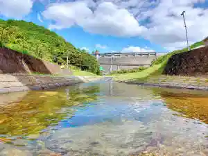
ボウケンノモリささぐり
ボウケンノモリささぐり
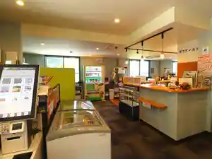
Sights
Minami Kura In
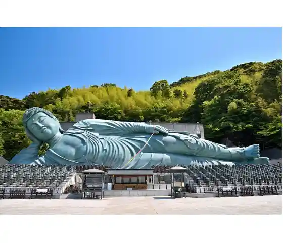
Sanno Tera Furin Festival
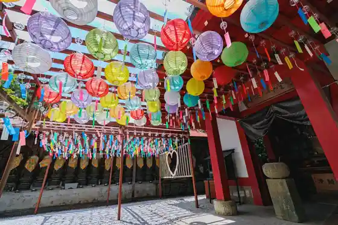
Sabo Warabi no
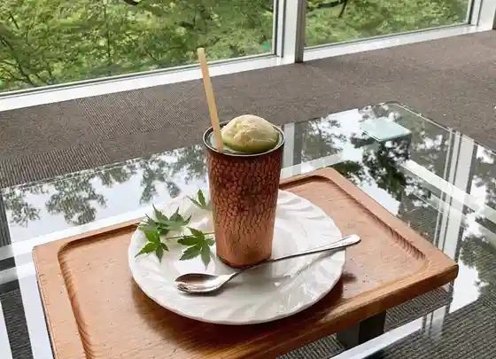
Kome no Yama Lookout
Yamaya Factory Terrace
Ajisai Ike
Donzan Kan'onji
Prefectural Shakai Kyoiku Sogo Center (Shonen Nature no Ie)
Sasaguri Kyudai no Mori Kosu
Go to no Taki
Kabuto no Mori Park (Sasaguri Sogo Sports Park)
Mei Fuchi Dam Lookout Plaza
Taiso Shrine (Kasuya Gun Sasaguri)
Donzan Kan'onji no Dodantsutsuji
Donzan Kan'onji Hoko Tateyama Ten'o In no Autumn Leaves
Sasaguri Gappei 50 Shunen Kinen Gym
Hasami Iwa (Wakasugi Oku Yuki In)
Yamato no Mori Promenade
Oashisu Sasaguri (Sasaguri Sogo Hoken Fukushi Center)
JR Kido Minami Kura In Zen'eki Mae
Murashima Manju Mise
Rakuyo Kosu
Kannon Park
Arata Shuyu Kosu
Jugei no Mori Park
Sasaguri Rekishi Minzoku Shiryoshitsu
Fufu Sugi Kosu
Masahiro Do
Shinrin Serapii Kichi Sasaguri
Sasaguri Park Dainichi Tera
Jugei no Mori Kosu
Arata Highlands
Ajisai Kosu
Sasaguri Kanko Koryu Kyoten 339Re (Sasaguri)
Donzan Kan'onji no Fukuju Sakura
Ajisai Rodo (Shinrin Serapii Ajisai Rodo Nai)
Wakasugi Toda no Futamata Sugi
Sasaguri Shin Shikoku Reijo